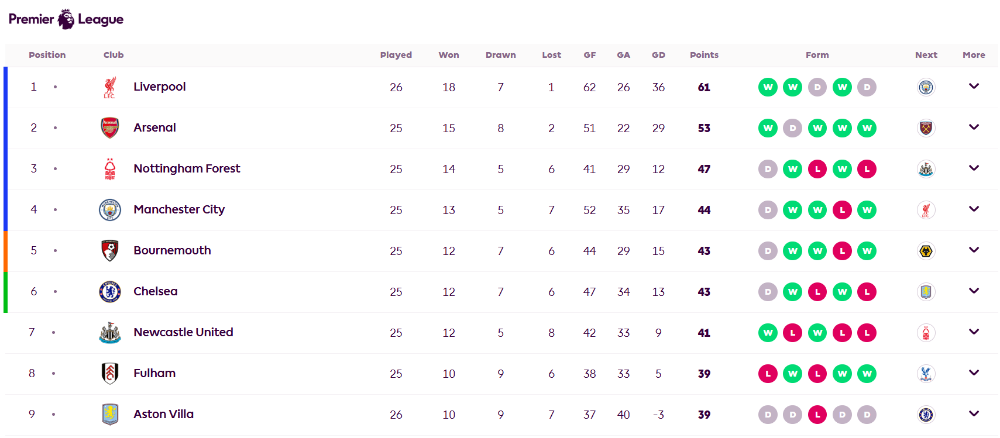

Liverpool FC Tops UEFA Champions League 2024/25 Group Stage
Liverpool FC showcased exceptional performance in the UEFA Champions League 2024/25 league phase, finishing at the top of the table. They secured 21 points with seven wins and one loss, demonstrating their dominance in European football. Notable victories include a 3-1 away win against AC Milan and a 4-0 home triumph over Bayer Leverkusen. Their only setback was a 3-2 loss to PSV Eindhoven, but they maintained their lead over strong contenders like Barcelona and Arsenal.
Liverpool FC Leading the Premier League Standings

As of February 20, 2025, Liverpool FC stands at the pinnacle of the English Premier League. Under the guidance of head coach Arne Slot, the team has achieved 18 wins, 1 draw, and 1 loss, accumulating a total of 55 points. Their consistent performances have placed them ahead of rivals such as Arsenal FC and Manchester City. Key matches contributing to their lead include a 2-0 victory over Brentford in their 6,000th competitive game and a 5-0 away win against West Ham United.
Mohamed Salah Favored for 2025 Ballon d'Or
Liverpool's star forward, Mohamed Salah, is currently the frontrunner for the 2025 Ballon d'Or. This season, Salah has delivered outstanding performances, recording 29 goals and 20 assists in 37 appearances across all competitions. His remarkable consistency and pivotal role in Liverpool's successes have positioned him ahead of other top contenders, including Real Madrid's Vinícius Júnior and Barcelona's Lamine Yamal. Former Liverpool defender Markus Babbel has praised Salah, stating that only a prime Lionel Messi could match his current level of play.